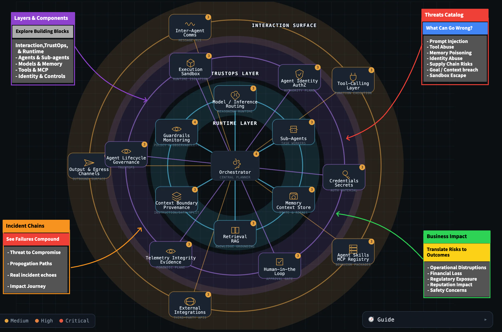
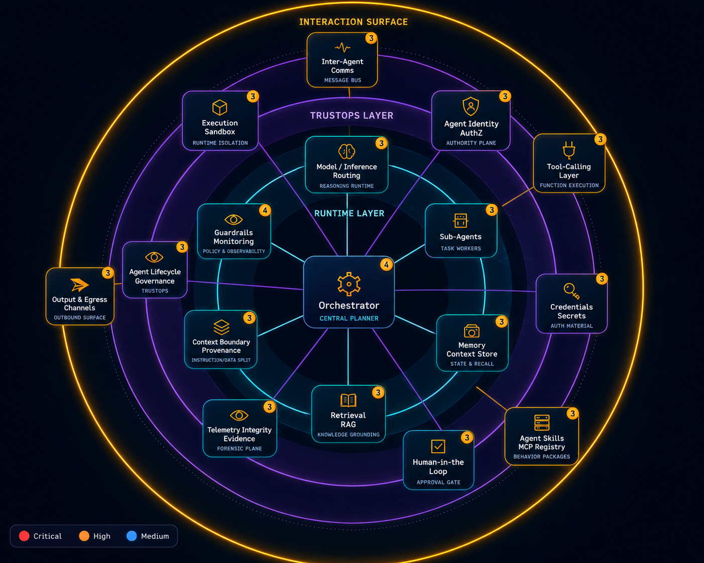

Layers & Components
Explore agents, memory, tools, identity, runtime, and TrustOps layers.
Learn Agentic Attack Surfaces, Risks, and Business Impact
Agentic Security Explorer (ASE) helps practitioners, leaders, students, and risk teams understand how autonomous agent systems are composed, where risks emerge, how failures chain across components, and what business impacts matter.
ASE is aligned with the Secure Agent Trust Framework (SATF), a vendor-neutral framework for autonomous agent governance and contextual security.

Components → Threats → Incident Chains → Business Impact

ASE helps users explore 50+ agentic AI risks, realistic incident chains, and business outcomes across a layered agentic system model.
Explore agents, memory, tools, identity, runtime, and TrustOps layers.
Understand what can go wrong across the agentic attack surface.
See how individual weaknesses compound into larger attack paths.
Connect technical risks to operational, financial, regulatory, and reputation outcomes.
Inspect agentic system components, risks, attack chains, and incident patterns through the interactive ASE map.
Translate technical agentic AI risks into plain-language business value, control concerns, and impact outcomes.
Understand how the agentic system operates through architecture diagrams, trust boundaries, and control placement.
Start guided learning paths and linked ASE v1.1 modules.
Learn Agentic Attack Surfaces, Risks, and Business Impact
Agentic Security Explorer (ASE) helps practitioners, leaders, students, and risk teams understand how autonomous agent systems are composed, where risks emerge, how failures chain across components, and what business impacts matter.
ASE is aligned with the Secure Agent Trust Framework (SATF), a vendor-neutral framework for autonomous agent governance and contextual security.
Components → Threats → Incident Chains → Business Impact
ASE helps users explore 50+ agentic AI risks, realistic incident chains, and business outcomes across a layered agentic system model.
Explore agents, memory, tools, identity, runtime, and TrustOps layers.
Understand what can go wrong across the agentic attack surface.
See how individual weaknesses compound into larger attack paths.
Connect technical risks to operational, financial, regulatory, and reputation outcomes.
A lightweight preview assistant for common agentic AI security questions. Framework mapping stays optional.
ASE v1.2 introduces framework-neutral security patterns. Optional framework mappings can be added later as overlays.
Validate user input, retrieved context, and agent messages before decisions or actions.
Constrain tool usage with authorization, allowlists, validation, and approval gates.
Observe, contain, and interrupt unsafe behavior during live execution.
Inspect agentic system components, risks, attack chains, and incident patterns through the interactive ASE map.
Translate technical agentic AI risks into plain-language business value, control concerns, and impact outcomes.
Understand how the agentic system operates through architecture diagrams, trust boundaries, and control placement.
Start guided learning paths and linked ASE v1.1 modules.